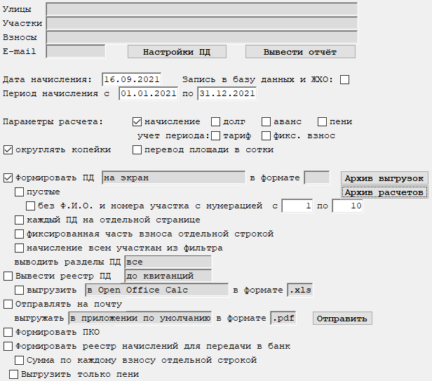
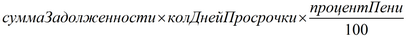
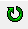
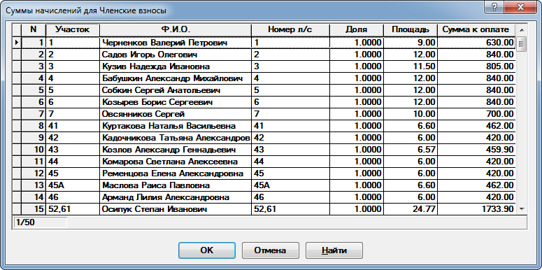
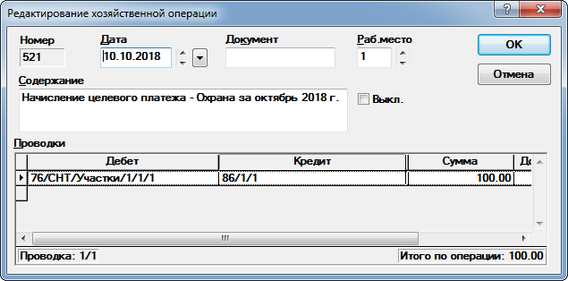

Бланк "Начисление членских и целевых взносов"
Данный бланк предназначен для начисления членских взносов с учетом смены тарифа (рис. 1).

Рис. 1. Бланк "Начисление членских и целевых взносов"|
|
Бланк содержит графы множественного выбора. Подробное описание работы с данными графами находится тут. |
Рассмотрим графы, доступные для заполнения:
-
Улицы - выбираются улицы, по которым необходимо выполнить расчет. Возможен выбор произвольного количества улиц. Если оставить графу пустой, то отбор будет осуществляться по всем улицам.
-
Участки - выбираются участки, по которым необходимо расчет. Возможен выбор произвольного количества участков. Если оставить графу пустой, то отбор будет осуществляться по всем участкам.
-
Взносы - выбираются взносы, по которым необходимо расчет. Возможен выбор произвольного количества взносов. Если оставить графу пустой, то отбор будет осуществляться по всем участкам.
-
E-mail - указывается наличие или отсутствие адреса электронной почты у участков, по которым будут сформированы ПД. Если графа не заполнена, то обработаны будут все участки. В противном случае, будут обработаны только те участки, у которых есть или нет адреса электронной почты.
-
Кнопка Настройки ПД - вызывается диалог настройки печати квитанций.
-
Кнопка Вывести отчёт - выводит отчёт по текущему расчёту. Вывести отчёт можно только после пересчёта бланка.
-
Дата начисления - дата хозяйственной операции. Автоматически может менять в зависимости от того, какой период будет выбран в графах периода начисления. По умолчанию при смене периода датой начисления будет считать конец периода.
-
Запись в базу данных и ЖХО - указывается, формировать ли хозяйственные операции и сохранять их в базу данных.
-
Период начисления - указывается период, за который производится начисление. Данное поле влияет на определение тарифа при начислении членских взносов, на содержание хозяйственных операций, а также на определение суммы взносов, если необходимо учитывать период.
-
Параметры расчета - включение использования параметров расчета из бланка, а не из таблицы параметров расчета Так же данные параметры используются при добавлении новых статей в таблице параметров расчета.
-
начисление - признак включения расчета начислений.
-
долг, аванс - признак включения расчета сальдо.
-
пени - признак включения расчета пени. Автоматически включает опцию долг. Без неё расчет пени осуществляться не будет. Для расчета пени необходимо заполнить Настройки расчета пени и включить расчет пени.
Расчет пени ведется следующим образом:
- на указанное в настройках число определяется сумма задолженности.
- определяется количество дней просрочки от даты в настройках до даты операции.
- подсчитывается сумма пени по формуле:

Возможен расчет пени сразу за несколько лет. В таком случае задолженность для каждого года определяется на число и месяц из даты в настройках. Ранее рассчитанная пеня повторно не учитывается.
-
учет периода - учитывать ли период для тарифа или фиксированного взноса. Если выбрана одна из опций, то тариф или сумма фиксированного взноса умножается на количество месяцев в выбранном периоде начисления.
-
округлять копейки - округление копеек до рублей.
-
перевод площади в сотки - указывается, преобразовывать ли площадь в сотки, если она указана в м2, а сумма или тариф рассчитаны для сотки.
-
Раздел Настройки формирования квитанций, хоз. операций и реестра.
-
Формировать ПД - признак формирования квитанций в бланке или на магнитный носитель(МН). В графе справа от опции можно указать, куда выводить ПД. Доступны вывод на экран или на МН через указанное приложение в указанном формате. При выводе на экран графа с форматом игнорируется.
пустые - для участков в фильтре формируются пустые квитанции.
без Ф.И.О. и номера участка с нумерацией - формируются пустые ПД без указания Ф.И.О. и адреса с заданной нумерацией.
каждый ПД на отдельной странице - каждый ПД будет печататься на отдельной странице.
фиксированная часть взноса отдельной строкой - опция для вывода отдельной строкой суммы по фиксированной части тарифа для взносов с методом расчета "По площади + фикс.".
выводить разделы ПД - указывается, какие разделы ПД необходимо будет вывести на экран или выгрузить на МН.
Выгрузки на МН можно просмотреть, если нажать на кнопку Архив выгрузок.
-
Кнопка Архив расчетов открывает архив расчетов. Позволяет повторить расчет с установленными ранее параметрами.
-
Вывести реестр ПД - признак формирования реестра сформированных квитанций. Его можно вывести до или после квитанций. Реестр можно выгрузить на МН через указанное приложение в указанном формате включив опцию выгрузить.
-
Отправлять на почту - признак отправки квитанций на электронную почту. Чтобы отправить письма необходимо нажать на кнопку Отправить. Отобразится редактор списка рассылки.
-
Формировать ПКО - указывается, формировать ли приходные ордера.
Будьте внимательны! Формирование хозяйственных операций по приходным ордерам не отключается.
-
Формировать реестр начислений для передачи в банк - признак формирования реестра начислений для передачи в банк. После формирования реестра будет предложено открыть директорию, в которую были выгружены файлы.
-
Сумма по каждой статье отдельной строкой - признак выгрузки суммы по каждому взносу отдельной строкой. Формат реестра отличается от стандартного.
-
Выгрузить только пени - признак выгрузки только реестра по пени.
-
После заполнения полей, влияющих на расчет, необходимо пересчитать бланк. Для этого нажмите кнопку

на панели инструментов, клавишу F9, или комбинацию клавиш Ctrl + Enter.После пересчета на экране отобразится список участков с суммами начислений (рис. 2). Суммы можно редактировать. Если начисление производится по нескольким статьям, то списки будут формироваться для каждой статьи отдельно.

Рис. 2. Список участков и суммы начислений по нимПосле нажатия на кнопку ОК будет выведено окно редактирования хозяйственной операции (рис. 3)

Рис. 3. Окно редактирования хозяйственной операциии будут сформированы квитанции для печати.